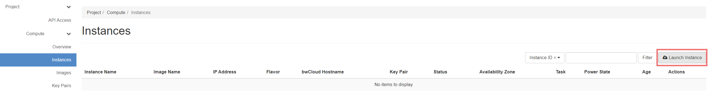
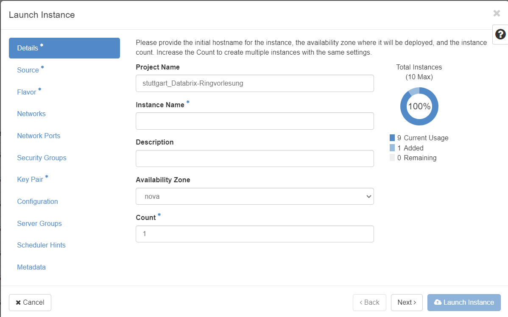

Virtuelle Maschinen und Speichervolumes starten
In diesem Abschnitt werden wir die virtuellen Maschinen und das Speichervolume erstellen, die für die Bereitstellung der E-Learning-Anwendung erforderlich sind.
Virtuelle Maschinen starten
Um die VMs zu erstellen, navigieren Sie zur Seite "Instances" in der bwCloud-Benutzeroberfläche.
Für die E-Learning-Anwendung benötigen Sie folgende VMs:
- 1 Manager Node für die Verwaltung und Ausführung der Webanwendung (4 vCPUs, 8 GB RAM)
- 4 Worker Nodes für die Ausführung der Jupyter-Notebooks der Studierenden (4 vCPUs, 8 GB RAM pro Node)
Schritte zum Erstellen einer VM:
- Klicken Sie auf die Schaltfläche "Launch Instance" auf der Seite "Instances".

- Wählen Sie im Dialogfeld "Launch Instance" die Registerkarte "Details" und geben Sie einen Namen für Ihre VM ein.

- Wählen Sie die Registerkarte "Source" und dann ein Ubuntu 20.04 Image aus der Liste.
- Wählen Sie die Registerkarte "Flavor" und wählen Sie die für den Knoten geeignete Flavor (z. B. m1.medium für Manager, m1.large für Worker).
- Wählen Sie die Registerkarte "Networks" und wählen Sie das Netzwerk "provider_net_dhbw".
- Wählen Sie die Registerkarte "Security Groups" und wählen Sie die Sicherheitsgruppe "default" (wir werden später eine eigene Sicherheitsgruppe erstellen).
- Wählen Sie die Registerkarte "Key Pair", um ein Schlüsselpaar zu importieren oder zu erstellen. Wenn Sie noch keines haben, können Sie auf "Create Key Pair" klicken.
- Klicken Sie auf "Launch Instance", um die VM zu erstellen.
Hinweis: Stellen Sie sicher, dass Sie Ihr privates Schlüsselpaar sicher aufbewahren, da Sie es zum Herstellen einer SSH-Verbindung zu Ihren VMs benötigen.
Wiederholen Sie diesen Vorgang für alle erforderlichen VMs.
Speichervolume erstellen
Als Nächstes erstellen wir ein Speichervolume für den dauerhaften Speicher der Anwendungsdaten:
- Navigieren Sie zum Abschnitt "Volumes" im linken Menü und klicken Sie auf "Create Volume".
- Geben Sie einen Namen für das Volume ein (z. B. "e-learning-data").
- Legen Sie die Größe auf mindestens 100 GB fest, um genügend Platz für die Jupyter-Notebooks und Kursdaten zu haben.
- Klicken Sie auf "Create Volume", um das Speichervolume zu erstellen.
Nach der Erstellung müssen Sie das Volume an die Manager-Node anhängen:
- Suchen Sie das erstellte Volume in der Liste, klicken Sie auf das Dropdown-Menü daneben und wählen Sie "Manage Attachments".
- Wählen Sie im Dialogfeld die Manager-Node aus der Liste der Instances aus.
- Klicken Sie auf "Attach Volume", um das Volume an die Manager-Node anzuhängen.
Hinweis: Nach dem Anhängen des Volumes an die Manager-Node müssen Sie das Volume einrichten und mounten, damit es von der E-Learning-Anwendung genutzt werden kann. Diese Schritte werden in einem späteren Abschnitt behandelt.